SEC 01
Escribe tu historia
De la rueda a la imprenta los primeros inventos que cambiaron la civilización humana para siempre.


Recorrido Histórico Tecnológico
Un viaje por los hitos de la tecnología que marcaron nuestra historia, desde los primeros inventos hasta la era digital.
De la rueda a la imprenta los primeros inventos que cambiaron la civilización humana para siempre.
¿Te acordás de esperar a que la tele "calentara" para ver tu programa favorito? En este sector, exploramos la evolución de lo que vemos y cómo lo vemos.
Antes de las ráfagas infinitas en el celular, cada disparo era una decisión, un destello y una historia guardada para siempre.
Te acordás de la emoción de esperar tu canción favorita en la radio para apretar Rec? En este sector celebramos la música que se podía tocar.
Vení a descubrir la evolución de las herramientas que impulsaron la formación técnica y el desarrollo independiente.
Antes de los mensajes de texto y las videollamadas, la inmediatez tenía este sonido y este tacto.
Hubo un tiempo en que escuchar música era un evento elegir el disco, limpiar la púa y esperar ese sutil "crack" antes de que la melodía invadiera el ambiente.
Una mirada al pasado para entender hacia dónde vamos, manteniendo siempre vivo nuestro origen.